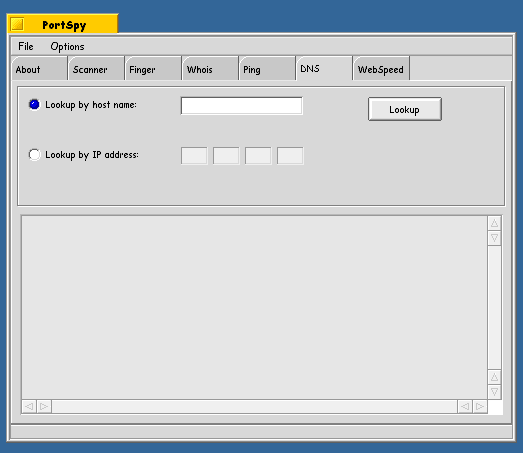
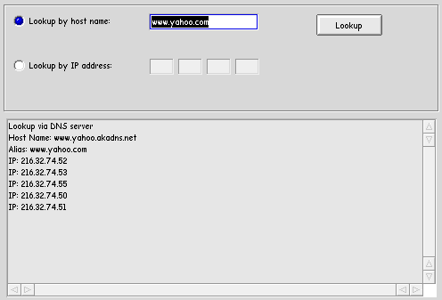
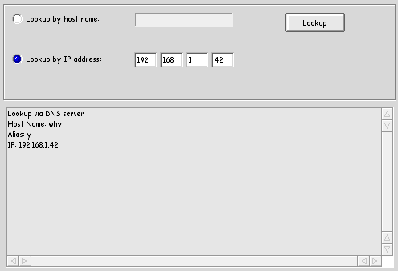

Simple but quite usefull DNS tool. DNS let you look up information about a IP address or about a server name. It returns to you lots of usefull things like any aliases and any other IP address assigned to that name. This is most usefull - I find - when I get a hit from on my webserver from a IP and I want to figure out who it is. I just type there IP in and hit 'Lookup' and it returns me the host they came from. This is a verry simular function as nslookup command under unix.
Simple but quite usefull DNS tool. DNS let you look up information about a IP address or about a server name. It returns to you lots of usefull things like any aliases and any other IP address assigned to that name. This is most usefull - I find - when I get a hit from on my webserver from a IP and I want to figure out who it is. I just type there IP in and hit 'Lookup' and it returns me the host they came from. This is a verry simular function as nslookup command under unix.

DNS has two way of looking up hosts. One by IP and the other by Name. Just choose which method you want and type in the name/ip and hit lookup. The information will be droped to the box. Here is a lookup by name on www.yahoo.com

Here we do a look up by IP. Notice the alias field .. lots of usefull infomation here :P

Back to PortSpy docs
PortSpy is copyright YNOP Talton 1999,2000